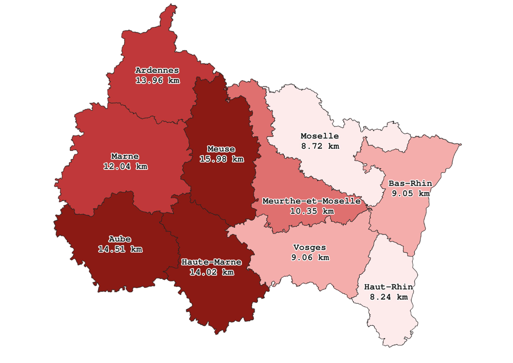

Infographie
Résultats de l'analyse spatiale et panorama des politiques publiques mises en place pour améliorer l'accessibilité aux hôpitaux de soins aigus en Grand Est.
Indicateurs clés
L'accessibilité aux soins aigus ne se réduit pas à un simple comptage d'établissements. Au-delà de la distance, d'autres facteurs structurels entrent en jeu : la superficie du département, la répartition géographique des hôpitaux au sein de ce territoire, ou encore la concentration des établissements autour des pôles urbains. Un département peut être bien doté en hôpitaux tout en laissant ses communes périphériques très éloignées de tout établissement, si ces derniers sont regroupés dans une seule ville.

Un département bien doté en hôpitaux peut afficher des distances élevées si les établissements sont concentrés dans une seule zone urbaine.
Sources : INSEE (2022), FINESS (2025)
Les communes rurales autonomes très peu denses ne disposent d'aucun hôpital sur leur territoire et se trouvent en moyenne à 14 km du plus proche. À l'opposé, 88 % des communes urbaines denses accueillent au moins un établissement.
Sources : INSEE (2022), FINESS (2025)
Les communes rurales autonomes très peu denses se trouvent en moyenne à 14 km de l'hôpital de soins aigus le plus proche — soit 5,8 fois plus loin qu'en milieu urbain dense. En cas d'arrêt cardiaque, chaque minute sans défibrillation réduit les chances de survie de 7 à 10 % : à 14 km, le SMUR peut mettre 20 minutes à arriver. La distance n'est pas un chiffre neutre — c'est un facteur de survie.
Politiques publiques
Face aux disparités territoriales identifiées, plusieurs dispositifs ont été déployés aux niveaux national et régional pour améliorer l'accessibilité aux soins dans les zones sous-dotées du Grand Est.
Identifie les Zones d'Intervention Prioritaire (ZIP) et les Zones d'Action Complémentaire (ZAC) à faible densité médicale, avec mesures incitatives pour l'installation dans les territoires ruraux sous-dotés.
Crée le SAS (numéro 15) pour orienter les patients selon le degré d'urgence et désengorger les services hospitaliers saturés. Plusieurs SAS territoriaux déployés en Grand Est.
Des médecins généralistes formés aux premiers secours interviennent dans les zones où le délai SMUR dépasse 30 minutes. Le Grand Est est région pilote en Meuse et Vosges.
Autorise un accès direct aux infirmiers en pratique avancée (IPA) sans ordonnance, compensant partiellement l'absence de médecins dans les zones rurales du Grand Est.
L'ARS subventionne plus de 120 MSP en Grand Est (2024) et les CPTS, concentrées dans les territoires ruraux sous-dotés pour améliorer le premier recours.
19 milliards d'euros pour moderniser les hôpitaux publics. En Grand Est, travaux à Charleville-Mézières, Verdun et Saint-Dié. Des fermetures de services d'urgences ont touché certains petits hôpitaux ruraux.